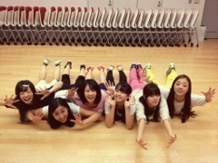

| 2012/10 24 Wed | 270回目*marika |
いつも読んでくださってる方、
初めて読んでくださった方、
コメントしてくださった方、
ありがとうございます。
どーん

テスト終わりました！
ちょとだけだらーんとして
いいですか
その後、ちょっとした
お仕事とレッスン
か い ほ う か ん

友達ともんじゃ行く約束した♪
ああああーもんじゃー
明太チーズもちー
久しぶりに質問回答します。↓
**********
 まりかはいつもオシャレだよね
まりかはいつもオシャレだよね
研究したりしてるのかな？
 ありがとうございます
ありがとうございます

研究というか、すきで
雑誌とか見てるだけですよ。
暇なときって何してるん？
寝る。漫画雑誌読む。
ボーッとしてる。
ついしてしまう癖ってあるん？
ケータイで何か調べるときとか、
画面が出るまで待つとき
指がちょいちょいちょいちょい
て動く。主に人差し指と中指 笑
顎に手をおくのも癖！
尊敬する人っている？
いるよ！んー、あえて言わない笑
質問メッチャ来られるのって
しんどい？
答えやすいものを選んでます

しんどくないです。
ただ、テスト期間など...
時間がなかったときは
お休みすることはあります。
ジョジョ知らないよね？
知ってるよーおしゃれ！
めっちゃ流行ってる。
ブログ読む限りメンバーみんな
ジョジョ化してますね笑
日常的に腕時計を使いますか？
持ってるけど、
あんまり使わないかなぁ...
アクセ代わりに付けることはある！
気に入った洋服はパッと買う？
ジックリ品定めして買う？
...イメージ的にはパッと買ってそう。
実は、自分でなかなか
服を買う勇気がないです。
買って失敗したことが
何度かあったから←
最近は思い切って買えるように
なってきたけど...
優柔不断うじうじ発動

買って後悔する前にママに聞いたり、
悩んでから買うよ。
いつか大人買いしてみたいよー
ハロウィンパーティするとしたら
どんな仮装がしたい？？
もけもけのおばけ、ゾンビ
**********

ありがとう！めがしゃきっとしました
気合いいれる。乃木充！
まりか
コメント(205)
2012/10/24 23:36